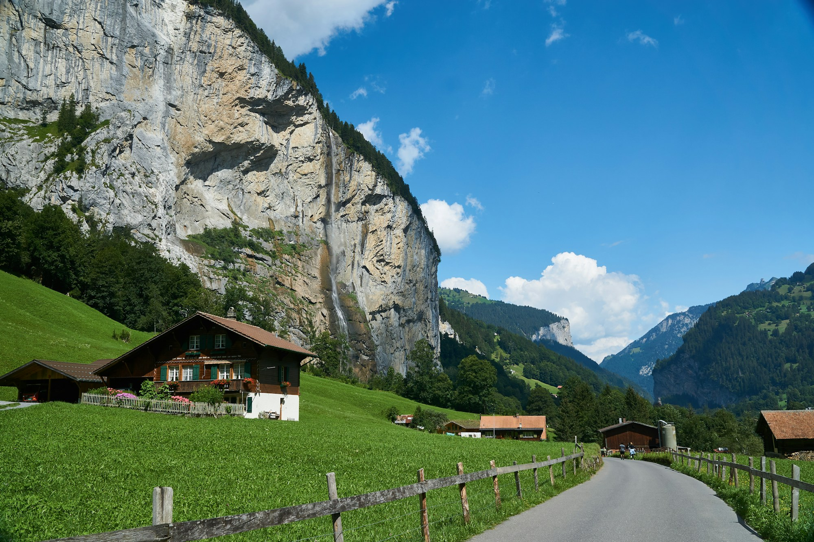

Lauterbrunnen
Switzerland
- What caught your eye
- A walk through the valley, with waterfalls above the village.
- Your note
- Keep this for a future Switzerland trip.
- Source
- Original post kept with the save.

Keep the places
worth going.
A home for the travel finds you want to come back to. In development for iPhone.
Explore an exampleFrom your feed to your next trip
A restaurant in a reel. A swimming spot in a story. A walk you haven't stopped thinking about. Fernstow is being built to keep the source, find the place, and make the useful details easier to come back to.
A closer look
The goal is a useful place card, with a clear distinction between what's known and what still needs a look.
Illustrative example, not a live import
Switzerland
The post couldn't be read.
More than one place could match.
The post belongs with the place. Go back to the creator, the details, and whatever made you save it.
A source that can't be read is still worth saving. Missing details should stay missing until they can be checked.
Fernstow's current build processes available media on-device. Looking up public posts and places still needs a connection.
A few things to know about where Fernstow is today.
Fernstow is in development. There isn't a public App Store or TestFlight download yet. This page will link to it when it's ready.
No. A link doesn't necessarily include the video or caption, and some posts can't be read. The app is built to keep the source when extraction falls short. Sharing a photo or video directly gives it more to work with.
Automatic Instagram comment reading and saved-collection imports aren't available in the current build. They're not required to save an individual source, and we won't pretend they're already working.
The current build uses Apple Maps to look up places. A complete, current set of ratings, hours, socials, and booking links is still future work. Check the place's own information before making plans.
The current build targets iOS 26. Full on-device extraction needs a compatible iPhone with Apple Intelligence enabled. Device testing is still in progress.
The current app stores saves on your device and doesn't have a Fernstow account system. Cross-device syncing isn't available yet.
In development for iPhone
We're working on the first release. Have a question or a travel-saving problem you'd like it to solve?